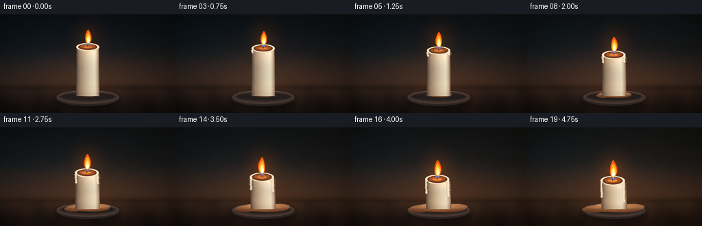
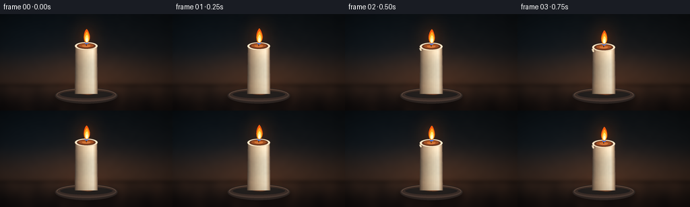

CODING AGENTS AS PIXEL WORLD MODELS
traex/DeepSeek-V4.1-Flash · phygen_097
点击播放 · 原生 RGB 像素
逐轮保存的候选
回放视频、检查图与代码变化。
每份候选均可单独播放。实际图片检查记录在下方工具轨迹中。
候选 01播放与检查图
点击播放 · 原生 RGB 像素


展开代码变化
--- 上一保存版本
+++ 本次保存版本
@@ -0,0 +1,529 @@
+from pathlib import Path
+import math
+
+import numpy as np
+from PIL import Image, ImageDraw, ImageFilter
+
+import artifact_io
+
+
+CASE_DIR = Path(__file__).resolve().parent
+WIDTH = 256
+HEIGHT = 144
+FRAMES = 20
+FPS = 4.0
+S = 4
+W = WIDTH * S
+H = HEIGHT * S
+
+
+def sc(value):
+ return value * S
+
+
+def stroke(value):
+ return max(1, round(value * S))
+
+
+def box(x0, y0, x1, y1):
+ return (sc(x0), sc(y0), sc(x1), sc(y1))
+
+
+def smoothstep(edge0, edge1, value):
+ t = np.clip((value - edge0) / (edge1 - edge0), 0.0, 1.0)
+ return t * t * (3.0 - 2.0 * t)
+
+
+def ease(value):
+ return value * value * (3.0 - 2.0 * value)
+
+
+def low_frequency_noise(seed, width, height, sigma):
+ rng = np.random.default_rng(seed)
+ small = rng.normal(0.0, 1.0, (max(2, height // 6), max(2, width // 6)))
+ small = np.clip(small, -2.8, 2.8)
+ image = Image.fromarray(((small + 2.8) * 45.5).astype(np.uint8), "L")
+ image = image.resize((width, height), Image.Resampling.BICUBIC)
+ image = image.filter(ImageFilter.GaussianBlur(sigma))
+ return (np.asarray(image, dtype=np.float32) - 128.0) / 55.0
+
+
+def build_background():
+ yy, xx = np.mgrid[0:H, 0:W].astype(np.float32)
+ x = xx / S
+ y = yy / S
+
+ wall_t = smoothstep(0.0, 105.0, y)
+ wall_top = np.array([14.0, 19.0, 23.0], dtype=np.float32)
+ wall_mid = np.array([28.0, 29.0, 31.0], dtype=np.float32)
+ wall_low = np.array([58.0, 40.0, 31.0], dtype=np.float32)
+ lower_t = smoothstep(45.0, 105.0, y)
+ wall = wall_top[None, None, :] * (1.0 - wall_t[..., None])
+ wall += wall_mid[None, None, :] * wall_t[..., None]
+ wall = wall * (1.0 - lower_t[..., None]) + wall_low[None, None, :] * lower_t[..., None]
+
+ table_t = smoothstep(104.0, 143.0, y)
+ table = np.array([49.0, 34.0, 27.0], dtype=np.float32)[None, None, :] * (1.0 - table_t[..., None])
+ table += np.array([23.0, 17.0, 16.0], dtype=np.float32)[None, None, :] * table_t[..., None]
+ grain = (
+ np.sin(x * 0.095 + 2.6 * np.sin(y * 0.032) + 0.7 * np.sin(x * 0.025))
+ + 0.45 * np.sin(x * 0.23 + y * 0.025 + 1.4)
+ ) * 0.5
+ table += grain[..., None] * np.array([7.0, 4.2, 2.7], dtype=np.float32)
+
+ horizon_blend = smoothstep(101.5, 108.5, y)[..., None]
+ background = wall * (1.0 - horizon_blend) + table * horizon_blend
+
+ noise = low_frequency_noise(97, W, H, 3.0 * S)
+ background += noise[..., None] * np.array([3.0, 2.6, 2.2], dtype=np.float32)
+
+ glow = np.exp(
+ -(((x - 128.0) / 88.0) ** 2 + ((y - 84.0) / 54.0) ** 2) * 1.7
+ )
+ background += glow[..., None] * np.array([18.0, 9.0, 4.0], dtype=np.float32)
+
+ cool_side = np.exp(-(((x - 20.0) / 92.0) ** 2 + ((y - 40.0) / 70.0) ** 2))
+ background += cool_side[..., None] * np.array([-2.0, 2.0, 5.0], dtype=np.float32)
+
+ vignette = 1.0 - 0.48 * np.clip(
+ ((x - 128.0) / 174.0) ** 2 + ((y - 72.0) / 108.0) ** 2, 0.0, 1.0
+ ) ** 1.15
+ background *= vignette[..., None]
+
+ horizon_shadow = np.exp(-((y - 106.0) / 4.5) ** 2)
+ background *= 1.0 - 0.18 * horizon_shadow[..., None]
+ return np.clip(background, 0.0, 255.0)
+
+
+def mask_from_draw(width, height, draw_callback):
+ mask = Image.new("L", (width, height), 0)
+ draw_callback(ImageDraw.Draw(mask))
+ return np.asarray(mask, dtype=np.uint8)
+
+
+def composite_rgba(base, layer):
+ return Image.alpha_composite(base.convert("RGBA"), layer).convert("RGB")
+
+
+def draw_saucer(image):
+ shadow = Image.new("RGBA", (W, H), (0, 0, 0, 0))
+ sd = ImageDraw.Draw(shadow)
+ sd.ellipse(box(80.0, 114.0, 176.0, 137.0), fill=(8, 7, 8, 112))
+ shadow = shadow.filter(ImageFilter.GaussianBlur(sc(4.0)))
+ image = composite_rgba(image, shadow)
+
+ layer = Image.new("RGBA", (W, H), (0, 0, 0, 0))
+ draw = ImageDraw.Draw(layer)
+ draw.ellipse(box(81.5, 109.5, 174.5, 133.5), fill=(43, 35, 32, 255))
+ draw.ellipse(box(83.0, 111.0, 173.0, 130.5), fill=(70, 55, 48, 255))
+ draw.ellipse(box(85.0, 111.8, 171.0, 128.0), fill=(55, 43, 38, 255))
+ draw.ellipse(box(89.0, 113.6, 167.0, 125.5), fill=(31, 29, 28, 255))
+ draw.arc(box(84.5, 111.3, 171.5, 129.2), 181, 357, fill=(130, 99, 78, 210), width=stroke(0.65))
+ draw.arc(box(89.5, 113.8, 166.5, 125.2), 183, 351, fill=(91, 65, 51, 175), width=stroke(0.45))
+ return composite_rgba(image, layer)
+
+
+def puddle_mask(p):
+ melt = ease(p)
+ cx = 128.0 + 0.7 * math.sin(p * 5.3)
+ width = 25.0 + 58.0 * melt
+ height = 6.5 + 4.5 * melt
+ cy = 116.6 + 1.2 * melt
+
+ def paint(draw):
+ draw.ellipse(
+ (sc(cx - width * 0.52), sc(cy - height * 0.52), sc(cx + width * 0.52), sc(cy + height * 0.52)),
+ fill=255,
+ )
+ draw.ellipse(
+ (sc(cx - width * 0.41), sc(cy - height * 0.62), sc(cx + width * 0.34), sc(cy + height * 0.42)),
+ fill=255,
+ )
+ draw.ellipse(
+ (sc(cx - width * 0.24), sc(cy - height * 0.43), sc(cx + width * 0.51), sc(cy + height * 0.57)),
+ fill=255,
+ )
+ if melt > 0.18:
+ draw.ellipse(
+ (
+ sc(cx - width * 0.56),
+ sc(cy - height * 0.20),
+ sc(cx - width * 0.16),
+ sc(cy + height * 0.60),
+ ),
+ fill=255,
+ )
+ if melt > 0.44:
+ draw.ellipse(
+ (
+ sc(cx + width * 0.10),
+ sc(cy - height * 0.55),
+ sc(cx + width * 0.54),
+ sc(cy + height * 0.22),
+ ),
+ fill=255,
+ )
+
+ mask = mask_from_draw(W, H, paint)
+ mask = np.asarray(
+ Image.fromarray(mask, "L").filter(ImageFilter.GaussianBlur(sc(0.38))), dtype=np.float32
+ ) / 255.0
+ return mask, (cx, cy, width, height, melt)
+
+
+def draw_puddle(image, p, frame):
+ mask, (cx, cy, width, height, melt) = puddle_mask(p)
+ yy, xx = np.mgrid[0:H, 0:W].astype(np.float32)
+ x = xx / S
+ y = yy / S
+
+ top_light = np.clip((cy + height * 0.45 - y) / (height * 1.1), 0.0, 1.0)
+ side = np.clip(np.abs(x - cx) / max(width * 0.52, 1.0), 0.0, 1.0)
+ base = np.zeros((H, W, 3), dtype=np.float32)
+ base[..., 0] = 127.0 + 91.0 * top_light - 31.0 * side
+ base[..., 1] = 74.0 + 77.0 * top_light - 21.0 * side
+ base[..., 2] = 43.0 + 51.0 * top_light - 10.0 * side
+ sheen = np.exp(-(((x - (cx + 2.0)) / (width * 0.38)) ** 2 + ((y - (cy - 1.2)) / 2.0) ** 2))
+ base += sheen[..., None] * np.array([49.0, 39.0, 24.0], dtype=np.float32)
+ alpha = (mask * 236.0)[..., None]
+ rgba = np.dstack([np.clip(base, 0, 255), alpha]).astype(np.uint8)
+ image = composite_rgba(image, Image.fromarray(rgba, "RGBA"))
+
+ detail = Image.new("RGBA", (W, H), (0, 0, 0, 0))
+ draw = ImageDraw.Draw(detail)
+ draw.arc(
+ box(cx - width * 0.30, cy - height * 0.42, cx + width * 0.25, cy + height * 0.02),
+ 192,
+ 338,
+ fill=(255, 231, 184, int(65 + 75 * melt)),
+ width=stroke(0.55),
+ )
+ if melt > 0.55:
+ glint_x = cx + 12.0 + 2.0 * math.sin(frame * 1.3)
+ draw.arc(
+ box(glint_x - 5.0, cy - 2.2, glint_x + 6.0, cy + 2.8),
+ 205,
+ 320,
+ fill=(255, 238, 200, 95),
+ width=stroke(0.45),
+ )
+ for bx, by, br in [(-19.0, 0.2, 0.9), (18.0, 1.1, 0.65), (26.0, -0.3, 0.5)]:
+ if (bx + 30.0) / 60.0 < melt:
+ px = cx + bx
+ py = cy + by
+ draw.ellipse(box(px - br, py - br * 0.55, px + br, py + br * 0.55), fill=(89, 48, 29, 135))
+ draw.ellipse(
+ box(px - br * 0.45, py - br * 0.35, px + br * 0.15, py + br * 0.05),
+ fill=(255, 217, 160, 130),
+ )
+ image = composite_rgba(image, detail)
+ return image, (cx, cy, width, height, melt)
+
+
+def body_geometry(top_y, p):
+ top_center = 128.0 - 2.2 * p + 0.35 * math.sin(6.1 * p)
+ bottom_y = 119.2
+ top_half = 16.1 + 0.55 * p
+ bottom_half = 17.0 + 1.25 * p
+
+ def sample(v):
+ y = top_y + v * (bottom_y - top_y)
+ center = top_center * (1.0 - v) + 128.0 * v + 0.75 * math.sin(math.pi * v + 0.35) * p
+ half = top_half * (1.0 - v) + bottom_half * v + 1.05 * math.sin(math.pi * v) * p
+ return y, center, half
+
+ return top_center, bottom_y, sample
+
+
+def draw_body(image, top_y, p, wax_noise):
+ top_center, bottom_y, sample = body_geometry(top_y, p)
+ left_points = []
+ right_points = []
+ for index in range(101):
+ v = index / 100.0
+ y, center, half = sample(v)
+ wobble = 0.35 * math.sin(5.5 * v + p * 2.0) * p
+ left_points.append((sc(center - half + wobble), sc(y)))
+ right_points.append((sc(center + half + wobble), sc(y)))
+
+ body_mask = mask_from_draw(W, H, lambda draw: draw.polygon(left_points + right_points[::-1], fill=255))
+
+ yy, xx = np.mgrid[0:H, 0:W].astype(np.float32)
+ x = xx / S
+ y = yy / S
+ v = np.clip((y - top_y) / max(bottom_y - top_y, 1.0), 0.0, 1.0)
+ center = top_center * (1.0 - v) + 128.0 * v + 0.75 * np.sin(np.pi * v + 0.35) * p
+ half = (
+ (16.1 + 0.55 * p) * (1.0 - v)
+ + (17.0 + 1.25 * p) * v
+ + 1.05 * np.sin(np.pi * v) * p
+ )
+ nx = np.clip((x - center) / np.maximum(half, 1.0), -1.0, 1.0)
+
+ stops = np.array([-1.0, -0.68, -0.18, 0.28, 0.62, 0.84, 1.0], dtype=np.float32)
+ colors = np.array(
+ [
+ [103, 87, 74],
+ [167, 143, 116],
+ [213, 193, 162],
+ [241, 226, 196],
+ [251, 239, 212],
+ [211, 184, 151],
+ [151, 126, 105],
+ ],
+ dtype=np.float32,
+ )
+ rgb = np.empty((H, W, 3), dtype=np.float32)
+ for channel in range(3):
+ rgb[..., channel] = np.interp(nx, stops, colors[:, channel])
+
+ vertical = 0.83 + 0.17 * (1.0 - v) + 0.025 * np.cos(v * 8.0)
+ rgb *= vertical[..., None]
+ rgb += wax_noise[..., None] * np.array([3.8, 3.2, 2.5], dtype=np.float32)
+ streak = np.sin(x * 1.9 + 0.6 * np.sin(y * 0.19)) * 1.2
+ rgb += streak[..., None] * np.array([1.0, 0.85, 0.55], dtype=np.float32)
+ edge_dark = 1.0 - 0.16 * smoothstep(0.84, 1.0, np.abs(nx))
+ rgb *= edge_dark[..., None]
+ alpha = (body_mask.astype(np.float32) / 255.0)[..., None]
+ rgba = np.dstack([np.clip(rgb, 0, 255), alpha * 255.0]).astype(np.uint8)
+ return composite_rgba(image, Image.fromarray(rgba, "RGBA"))
+
+
+def draw_top_pool(image, top_y, top_center, p, frame):
+ layer = Image.new("RGBA", (W, H), (0, 0, 0, 0))
+ draw = ImageDraw.Draw(layer)
+ rim_w = 16.9 + 0.9 * p
+ rim_h = 5.1 + 1.15 * p
+ draw.ellipse(
+ box(top_center - rim_w, top_y - rim_h, top_center + rim_w, top_y + rim_h + 1.2),
+ fill=(224, 205, 174, 255),
+ )
+ draw.ellipse(
+ box(top_center - rim_w + 0.7, top_y - rim_h + 0.3, top_center + rim_w - 0.6, top_y + rim_h + 0.6),
+ fill=(247, 234, 207, 255),
+ )
+ inner_w = rim_w - 3.1
+ inner_h = rim_h - 1.0
+ draw.ellipse(
+ box(top_center - inner_w, top_y - inner_h + 0.4, top_center + inner_w, top_y + inner_h + 0.8),
+ fill=(96, 51, 31, 255),
+ )
+ draw.ellipse(
+ box(top_center - inner_w * 0.78, top_y - inner_h * 0.70, top_center + inner_w * 0.78, top_y + inner_h * 0.72),
+ fill=(151, 76, 35, 255),
+ )
+ draw.ellipse(
+ box(top_center - inner_w * 0.46, top_y - inner_h * 0.42, top_center + inner_w * 0.46, top_y + inner_h * 0.52),
+ fill=(205, 105, 40, 220),
+ )
+ draw.arc(
+ box(top_center - rim_w + 1.0, top_y - rim_h + 0.2, top_center + rim_w - 1.0, top_y + rim_h + 0.5),
+ 188,
+ 352,
+ fill=(255, 246, 222, 225),
+ width=stroke(0.55),
+ )
+ if p > 0.3:
+ wobble = 0.35 * math.sin(frame * 1.7)
+ draw.arc(
+ box(top_center - inner_w * 0.55, top_y - 0.2 + wobble, top_center + inner_w * 0.45, top_y + 3.0),
+ 200,
+ 327,
+ fill=(255, 185, 91, 125),
+ width=stroke(0.42),
+ )
+ image = composite_rgba(image, layer)
+
+ wick_x = top_center + 0.25
+ wick_top = top_y - 5.1
+ wick_layer = Image.new("RGBA", (W, H), (0, 0, 0, 0))
+ draw = ImageDraw.Draw(wick_layer)
+ draw.line(
+ [(sc(wick_x), sc(top_y + 0.4)), (sc(wick_x - 0.25), sc(top_y - 2.2)), (sc(wick_x + 0.35), sc(wick_top))],
+ fill=(25, 20, 17, 255),
+ width=max(1, round(sc(1.05))),
+ joint="curve",
+ )
+ draw.ellipse(box(wick_x + 0.02, wick_top - 0.55, wick_x + 0.90, wick_top + 0.35), fill=(230, 67, 22, 240))
+ image = composite_rgba(image, wick_layer)
+ return image, wick_x, wick_top
+
+
+DRIPS = [
+ (-1, 0.10, 19.0, 1.9, 0.7),
+ (1, 0.23, 25.0, 2.1, 1.4),
+ (-1, 0.38, 12.0, 1.6, 2.1),
+ (1, 0.48, 17.0, 1.8, 2.8),
+ (-1, 0.60, 9.5, 1.35, 3.5),
+ (1, 0.69, 21.0, 1.55, 4.2),
+ (-1, 0.78, 14.0, 1.45, 4.9),
+ (1, 0.86, 9.0, 1.2, 5.6),
+]
+
+
+def draw_drips(image, top_y, p, frame):
+ top_center, bottom_y, sample = body_geometry(top_y, p)
+ layer = Image.new("RGBA", (W, H), (0, 0, 0, 0))
+ draw = ImageDraw.Draw(layer)
+ for side, start, max_length, thickness, phase in DRIPS:
+ if p <= start:
+ continue
+ q = (p - start) / (1.0 - start)
+ q = q ** 1.12
+ length = 3.0 + max_length * q
+ edge_v = 0.025
+ edge_y, edge_center, edge_half = sample(edge_v)
+ start_x = edge_center + side * (edge_half - 0.45)
+ start_y = max(top_y + 1.1, edge_y + 1.2)
+ end_y = min(bottom_y + 1.8, start_y + length)
+ if end_y <= start_y + 1.0:
+ continue
+
+ points = []
+ steps = 18
+ for index in range(steps + 1):
+ t = index / steps
+ y = start_y + (end_y - start_y) * t
+ sway = 0.42 * math.sin(t * math.pi * 1.25 + phase + frame * 0.10)
+ x = start_x + side * sway
+ points.append((x, y))
+ shadow_points = [(x + sc(0.5), y + sc(0.25)) for x, y in points]
+ highlight_points = [(x - sc(0.35), y) for x, y in points]
+ draw.line(
+ [(sc(x), sc(y)) for x, y in shadow_points],
+ fill=(122, 95, 73, 130),
+ width=max(2, round(sc(thickness + 0.7))),
+ joint="curve",
+ )
+ draw.line(
+ [(sc(x), sc(y)) for x, y in points],
+ fill=(239, 221, 190, 255),
+ width=max(2, round(sc(thickness))),
+ joint="curve",
+ )
+ draw.line(
+ [(sc(x), sc(y)) for x, y in highlight_points],
+ fill=(255, 246, 220, 155),
+ width=max(1, round(sc(thickness * 0.42))),
+ joint="curve",
+ )
+ bulb_x, bulb_y = points[-1]
+ bulb_r = thickness * (0.55 + 0.25 * q)
+ draw.ellipse(
+ box(bulb_x - bulb_r, bulb_y - bulb_r * 0.75, bulb_x + bulb_r, bulb_y + bulb_r * 0.75),
+ fill=(241, 224, 193, 255),
+ )
+ draw.ellipse(
+ box(bulb_x - bulb_r * 0.30, bulb_y - bulb_r * 0.46, bulb_x + bulb_r * 0.20, bulb_y - bulb_r * 0.05),
+ fill=(255, 246, 222, 150),
+ )
+ return composite_rgba(image, layer)
+
+
+def flame_points(cx, base_y, height, half_width, phase, lean, scale=1.0):
+ left = []
+ right = []
+ for index in range(81):
+ t = index / 80.0
+ y = base_y - height * scale * t
+ profile = math.sin(math.pi * (t ** 0.82)) ** 0.68
+ profile *= 1.0 - 0.10 * t
+ width = half_width * scale * profile
+ sway = lean * math.sin(math.pi * t * 0.92)
+ sway += 0.30 * math.sin(math.pi * 2.0 * t + phase) * t
+ center = cx + sway
+ left.append((sc(center - width), sc(y)))
+ right.append((sc(center + width), sc(y)))
+ return left + right[::-1]
+
+
+def draw_flame_and_light(image, wick_x, wick_top, p, frame):
+ phase = 0.65 * frame
+ height = 21.0 + 4.0 * p + 0.85 * math.sin(frame * 1.45)
+ half_width = 4.65 + 0.65 * p + 0.18 * math.sin(frame * 1.1 + 0.4)
+ lean = 0.75 * math.sin(frame * 0.78) + 0.45 * math.sin(frame * 1.63 + 1.1)
+ base_y = wick_top + 1.35
+ flame_cx = wick_x + 0.25
+
+ array = np.asarray(image, dtype=np.float32)
+ yy, xx = np.mgrid[0:H, 0:W].astype(np.float32)
+ x = xx / S
+ y = yy / S
+ halo_center_y = base_y - height * 0.38
+ halo = np.exp(
+ -(((x - flame_cx) / 26.0) ** 2 + ((y - halo_center_y) / 32.0) ** 2) * 1.75
+ )
+ array += halo[..., None] * np.array([42.0, 18.0, 4.5], dtype=np.float32) * (0.62 + 0.30 * p)
+
+ lower_halo = np.exp(
+ -(((x - flame_cx) / 40.0) ** 2 + ((y - 111.0) / 19.0) ** 2) * 1.9
+ )
+ array += lower_halo[..., None] * np.array([20.0, 8.0, 1.8], dtype=np.float32) * (0.45 + 0.35 * p)
+ image = Image.fromarray(np.clip(array, 0.0, 255.0).astype(np.uint8), "RGB")
+
+ glow = Image.new("RGBA", (W, H), (0, 0, 0, 0))
+ gd = ImageDraw.Draw(glow)
+ gd.polygon(
+ flame_points(flame_cx, base_y, height, half_width * 1.55, phase, lean, 1.08),
+ fill=(255, 92, 16, 92),
+ )
+ glow = glow.filter(ImageFilter.GaussianBlur(sc(7.0)))
+ image = composite_rgba(image, glow)
+
+ flame = Image.new("RGBA", (W, H), (0, 0, 0, 0))
+ draw = ImageDraw.Draw(flame)
+ draw.ellipse(
+ box(flame_cx - half_width * 0.56, base_y - 1.9, flame_cx + half_width * 0.56, base_y + 1.6),
+ fill=(69, 133, 255, 220),
+ )
+ draw.polygon(
+ flame_points(flame_cx, base_y, height, half_width, phase, lean, 1.0),
+ fill=(255, 91, 14, 255),
+ )
+ draw.polygon(
+ flame_points(flame_cx + 0.15, base_y - 0.55, height, half_width, phase + 0.7, lean * 0.8, 0.78),
+ fill=(255, 173, 31, 255),
+ )
+ draw.polygon(
+ flame_points(flame_cx + 0.28, base_y - 1.05, height, half_width, phase + 1.3, lean * 0.55, 0.53),
+ fill=(255, 238, 128, 255),
+ )
+ draw.polygon(
+ flame_points(flame_cx + 0.32, base_y - 1.25, height, half_width, phase + 1.7, lean * 0.35, 0.31),
+ fill=(255, 252, 224, 255),
+ )
+ image = composite_rgba(image, flame)
+ return image
+
+
+def render_frame(base_background, wax_noise, frame):
+ p = frame / (FRAMES - 1)
+ melt = ease(p)
+ top_y = 47.0 + 30.2 * melt
+
+ background = base_background.copy()
+ background += np.array([7.0 * p, 3.0 * p, -1.0 * p], dtype=np.float32)[None, None, :]
+ exposure = 0.985 + 0.035 * p
+ background = np.clip(background * exposure, 0.0, 255.0)
+ image = Image.fromarray(background.astype(np.uint8), "RGB")
+
+ image = draw_saucer(image)
+ image, puddle_info = draw_puddle(image, p, frame)
+ image = draw_body(image, top_y, p, wax_noise)
+ top_center, _, _ = body_geometry(top_y, p)
+ image, wick_x, wick_top = draw_top_pool(image, top_y, top_center, p, frame)
+ image = draw_drips(image, top_y, p, frame)
+ image = draw_flame_and_light(image, wick_x, wick_top, p, frame)
+
+ return np.asarray(image.resize((WIDTH, HEIGHT), Image.Resampling.LANCZOS), dtype=np.uint8)
+
+
+def main():
+ base_background = build_background()
+ wax_noise = low_frequency_noise(193, W, H, 1.2 * S)
+ frames = [render_frame(base_background, wax_noise, frame) for frame in range(FRAMES)]
+ artifact_io.save(np.asarray(frames, dtype=np.uint8), CASE_DIR)
+
+
+if __name__ == "__main__":
+ main()
可观测工具轨迹
实际执行的命令与返回图片。
命令 1exit 0
/bin/bash -c "pwd && rg --files -g '"'!*__pycache__*'"'"
命令 2exit 0
/bin/bash -c 'git status --short'
命令 3exit 0
/bin/bash -c 'cat prompt.txt'
命令 4exit 0
/bin/bash -c 'cat GENERATION_RULES.md'
命令 5exit 0
/bin/bash -c 'cat task_spec.json'
命令 6exit 0
/bin/bash -c "sed -n '1,240p' artifact_io.py && sed -n '1,240p' player_template.html"
命令 7exit 1
/bin/bash -c 'python generate.py'
命令 8exit 0
/bin/bash -c "rg -n 'width=sc|round\\(sc' generate.py"
命令 9exit 0
/bin/bash -c 'python generate.py'
命令 10exit 0
/bin/bash -c 'command -v chafa || true; command -v viu || true; command -v jp2 || true; command -v ffmpeg || true'
命令 11exit 0
/bin/bash -c "find . -maxdepth 2 -type f -printf '%p %s bytes\\n' | sort"
命令 12exit 0
/bin/bash -c "python - <<'PY'
from PIL import Image, ImageOps
im=Image.open('frames/00.png').convert('L')
im=ImageOps.autocontrast(im)
w=96; h=max(1,round(im.height/im.width*w*0.45))
im=im.resize((w,h))
chars=' .:-=+*#%@'
for row in im.getdata():
pass
for y in range(h):
print(''.join(chars[im.getpixel((x,y))*len(chars)//256] for x in range(w)))
PY"命令 13exit 0
/bin/bash -c "python - <<'PY'
from PIL import Image, ImageOps
for f in (0,10,19):
im=Image.open(f'frames/{f:02d}.png').convert('RGB')
# crop scene around candle, upscale nearest for terminal review
im=im.crop((55,25,205,140)).resize((75,57),Image.Resampling.NEAREST)
print('\\nFRAME',f)
chars=' .,:;irsXA253hMHGS#9B&@'
for y in range(im.height):
print(''.join(chars[(sum(im.getpixel((x,y)))//3)*len(chars)//256] for x in range(im.width)))
PY"命令 14exit 0
/bin/bash -c "python - <<'PY'
from PIL import Image
import numpy as np
for f in (0,10,19):
a=np.asarray(Image.open(f'frames/{f:02d}.png')).astype(float)
print(f, 'mean', a.mean((0,1)).round(1), 'minmax', a.min(), a.max())
# luminance in scene center and warm channel spread
l=a.mean(2)
print(' center mean/max', l[20:120,90:170].mean().round(1), l[20:120,90:170].max().round(1))
PY"命令 15exit 1
/bin/bash -c "python - <<'PY'
from pathlib import Path
import json, numpy as np
from PIL import Image
root=Path('.')
spec=json.loads((root/'task_spec.json').read_text())
files=sorted((root/'frames').glob('*.png'))
assert len(files)==spec['frames'], len(files)
frames=np.stack([np.asarray(Image.open(f).convert('RGB')) for f in files])
assert frames.shape==(spec['frames'],spec['height'],spec['width'],3), frames.shape
assert frames.dtype==np.uint8
z=np.load(root/'pixels.npz')['pixels']
assert z.shape==(spec['height'],spec['width'],spec['frames'])
rec=np.stack([(z[:,:,i]>>16).astype(np.uint8),(z[:,:,i]>>8).astype(np.uint8),z[:,:,i].astype(np.uint8)],axis=2)
assert np.array_equal(rec,frames)
diffs=np.abs(frames[1:].astype(np.int16)-frames[:-1].astype(np.int16)).mean((1,2,3))
lum=frames.mean(3)
warm=(frames[...,0].astype(float)-frames[...,2].astype(float))
print('shape/dtype:',frames.shape,frames.dtype)
print('pixel archive roundtrip: OK')
print('per-frame mean absolute delta:',np.round(diffs,2).tolist())
print('mean RGB first/last:',np.round(frames[0].mean((0,1)),1),np.round(frames[-1].mean((0,1)),1))
print('warmth first/last:',round(warm[0].mean(),2),round(warm[-1].mean(),2))
print('brightest-center count first/last:',int((lum[0,20:120,90:170]>220).sum()),int((lum[-1,20:120,90:170]>220).sum()))
html=(root/'index.html').read_text()
assert '__DATA__' not in html and '__ID__' not in html and 'window.__pixelReady' in html
print('player payload: OK,',len(html),'bytes')
PY"命令 16exit 1
/bin/bash -c "python - <<'PY'
from pathlib import Path
import json, numpy as np
from PIL import Image
root=Path('.')
spec=json.loads((root/'task_spec.json').read_text())
files=sorted((root/'frames').glob('*.png'))
assert len(files)==spec['frames'], len(files)
frames=np.stack([np.asarray(Image.open(f).convert('RGB')) for f in files])
assert frames.shape==(spec['frames'],spec['height'],spec['width'],3), frames.shape
assert frames.dtype==np.uint8
z=np.load(root/'pixels.npz')['pixels']
assert z.shape==(spec['height'],spec['width'],spec['frames'])
rec=np.stack([(z[:,:,index]>>16).astype(np.uint8),(z[:,:,index]>>8).astype(np.uint8),z[:,:,index].astype(np.uint8)],axis=2)
rec=np.transpose(rec,(2,0,1))
assert np.array_equal(rec,frames)
diffs=np.abs(frames[1:].astype(np.int16)-frames[:-1].astype(np.int16)).mean((1,2,3))
lum=frames.mean(3)
warm=(frames[...,0].astype(float)-frames[...,2].astype(float))
print('shape/dtype:',frames.shape,frames.dtype)
print('pixel archive roundtrip: OK')
print('per-frame mean absolute delta:',np.round(diffs,2).tolist())
print('mean RGB first/last:',np.round(frames[0].mean((0,1)),1),np.round(frames[-1].mean((0,1)),1))
print('warmth first/last:',round(warm[0].mean(),2),round(warm[-1].mean(),2))
print('brightest-center count first/last:',int((lum[0,20:120,90:170]>220).sum()),int((lum[-1,20:120,90:170]>220).sum()))
html=(root/'index.html').read_text()
assert '__DATA__' not in html and '__ID__' not in html and 'window.__pixelReady' in html
print('player payload: OK,',len(html),'bytes')
PY"命令 17exit 0
/bin/bash -c "python - <<'PY'
from pathlib import Path
import json, numpy as np
from PIL import Image
root=Path('.')
spec=json.loads((root/'task_spec.json').read_text())
files=sorted((root/'frames').glob('*.png'))
assert len(files)==spec['frames'], len(files)
frames=np.stack([np.asarray(Image.open(f).convert('RGB')) for f in files])
assert frames.shape==(spec['frames'],spec['height'],spec['width'],3), frames.shape
assert frames.dtype==np.uint8
z=np.load(root/'pixels.npz')['pixels']
assert z.shape==(spec['height'],spec['width'],spec['frames'])
rec=np.empty_like(frames)
for i in range(spec['frames']):
rec[i,:,:,0]=(z[:,:,i]>>16).astype(np.uint8)
rec[i,:,:,1]=(z[:,:,i]>>8).astype(np.uint8)
rec[i,:,:,2]=z[:,:,i].astype(np.uint8)
assert np.array_equal(rec,frames)
diffs=np.abs(frames[1:].astype(np.int16)-frames[:-1].astype(np.int16)).mean((1,2,3))
lum=frames.mean(3)
warm=(frames[...,0].astype(float)-frames[...,2].astype(float))
print('shape/dtype:',frames.shape,frames.dtype)
print('pixel archive roundtrip: OK')
print('per-frame mean absolute delta:',np.round(diffs,2).tolist())
print('mean RGB first/last:',np.round(frames[0].mean((0,1)),1),np.round(frames[-1].mean((0,1)),1))
print('warmth first/last:',round(warm[0].mean(),2),round(warm[-1].mean(),2))
print('brightest-center count first/last:',int((lum[0,20:120,90:170]>220).sum()),int((lum[-1,20:120,90:170]>220).sum()))
html=(root/'index.html').read_text()
assert '__DATA__' not in html and '__ID__' not in html and 'window.__pixelReady' in html
print('player payload: OK,',len(html),'bytes')
PY"保存候选 1 份；完成命令 17 次；可验证图片返回 0 张。原始 API 响应与完整日志保留在本地。